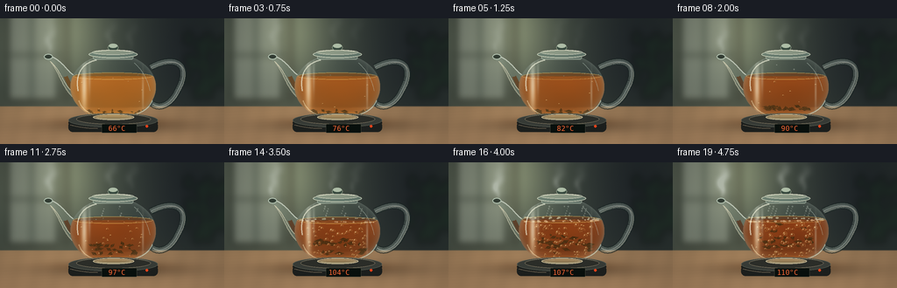
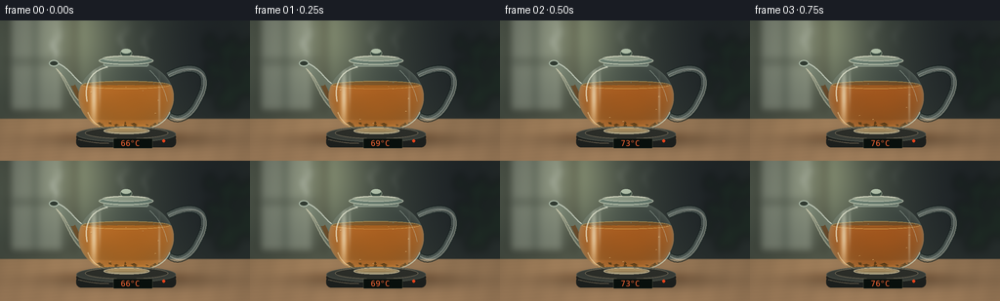

CODING AGENTS AS PIXEL WORLD MODELS
traex/GPT-6.1-Sol · phygen_109
点击播放 · 原生 RGB 像素
逐轮保存的候选
回放视频、检查图与代码变化。
每份候选均可单独播放。实际图片检查记录在下方工具轨迹中。
候选 01播放与检查图
点击播放 · 原生 RGB 像素


展开代码变化
--- 上一保存版本
+++ 本次保存版本
@@ -0,0 +1,260 @@
+"""Procedural, supersampled tea-heating timelapse; no external assets."""
+from pathlib import Path
+import json
+import numpy as np
+from PIL import Image, ImageDraw, ImageFilter, ImageFont
+from artifact_io import save
+
+ROOT = Path(__file__).resolve().parent
+SPEC = json.loads((ROOT / 'task_spec.json').read_text())
+W,H = SPEC['width'], SPEC['height']
+S = 3
+WW,HH = W*S,H*S
+Y,X = np.mgrid[0:HH,0:WW].astype(np.float32)/S
+rng = np.random.default_rng(4189)
+
+def composite(a, color, alpha):
+ if np.isscalar(alpha): alpha = np.full((HH,WW),alpha,np.float32)
+ alpha = np.clip(alpha,0,1)[...,None]
+ return a*(1-alpha)+np.asarray(color,dtype=np.float32)*alpha
+
+def ellipse(cx,cy,rx,ry):
+ return ((X-cx)/rx)**2+((Y-cy)/ry)**2
+
+def gauss(cx,cy,rx,ry):
+ return np.exp(-.5*ellipse(cx,cy,rx,ry))
+
+def bezier(points,n=80):
+ p=np.array(points,float)
+ t=np.linspace(0,1,n)[:,None]
+ if len(p)==4:
+ v=(1-t)**3*p[0]+3*(1-t)**2*t*p[1]+3*(1-t)*t*t*p[2]+t**3*p[3]
+ else: v=(1-t)**2*p[0]+2*(1-t)*t*p[1]+t*t*p[2]
+ return [tuple(q*S) for q in v]
+
+def newlayer(): return Image.new('RGBA',(WW,HH),(0,0,0,0))
+def put(a,lay):
+ r=np.asarray(lay,dtype=np.float32)
+ return composite(a,r[...,:3],r[...,3]/255)
+
+def line(d,pts,fill,width):
+ d.line([(x*S,y*S) for x,y in pts],fill=fill,width=max(1,round(width*S)),joint='curve')
+
+def curve(d,pts,fill,width):
+ d.line(bezier(pts), fill=fill,width=max(1,round(width*S)),joint='curve')
+
+def ell(d,b,fill,outline=None,width=1):
+ d.ellipse(tuple(v*S for v in b),fill=fill,outline=outline,width=max(1,round(width*S)))
+
+# A softly defocused, side-lit kitchen, made exclusively from gradients.
+a=np.zeros((HH,WW,3),np.float32)
+a[:]=[44,53,49]
+a += gauss(48,22,67,67)[...,None]*np.array([43,42,32])
+a += gauss(212,28,40,64)[...,None]*np.array([-13,-16,-9])
+a += gauss(75,8,29,45)[...,None]*np.array([53,54,39])
+back=newlayer(); d=ImageDraw.Draw(back)
+d.rounded_rectangle((9*S,-12*S,66*S,94*S),radius=2*S,fill=(175,183,167,100))
+d.rectangle((34*S,0,38*S,95*S),fill=(52,64,57,140))
+d.rectangle((7*S,40*S,68*S,44*S),fill=(60,67,58,130))
+d.rectangle((73*S,0,78*S,94*S),fill=(85,76,60,120))
+# Indistinct green foliage in the depth of the kitchen.
+for _ in range(24):
+ cx=rng.uniform(210,259); cy=rng.uniform(23,88)
+ ell(d,(cx-5,cy-9,cx+5,cy+9),(25,43,31,125))
+back=back.filter(ImageFilter.GaussianBlur(4.2*S)); a=put(a,back)
+counter=np.stack([145+.42*(Y-100),115+.31*(Y-100),83+.23*(Y-100)],axis=-1)
+wood=(1.1*np.sin(.27*X+.05*Y)+.9*np.sin(.062*X+.1*Y)+.4*np.sin(1.8*Y+.08*X))
+counter += wood[...,None]*np.array([1.6,1.2,.9])
+a=composite(a,counter,np.clip((Y-100)*.7,0,1))
+a += gauss(74,108,73,14)[...,None]*np.array([13,10,6])
+a=composite(a,[44,33,23],gauss(135,123,64,6)*.4)
+a=composite(a,[91,40,8],gauss(127,119,39,4)*.27)
+BG=a.copy()
+
+bodyq=ellipse(129,78.5,49,38)
+body=(bodyq<=1)&(Y>=45)
+normalz=np.sqrt(np.maximum(0,1-bodyq))
+# Back of the transparent handle.
+handle=[[(172,56),(206,39),(217,58),(203,82)],[(203,82),(196,98),(183,105),(174,98)]]
+
+leaf_data=[]
+for j in range(31):
+ leaf_data.append((rng.uniform(-1,1),rng.uniform(0,1),rng.uniform(2,5),rng.uniform(0,6.28),rng.uniform(.2,1)))
+bubble_data=[(rng.uniform(-1,1),rng.uniform(0,1),rng.uniform(.55,1.6),rng.uniform(0,6.28)) for _ in range(105)]
+font_path='/usr/share/fonts/truetype/dejavu/DejaVuSansMono.ttf'
+font=ImageFont.truetype(font_path,8*S)
+smallfont=ImageFont.truetype(font_path,3*S)
+
+
+def render(i):
+ t=i/(SPEC['frames']-1)
+ time=i/SPEC['fps']
+ heat=np.clip((t-.35)/.65,0,1)
+ boil=np.clip((t-.53)/.26,0,1)
+ brew=1-np.exp(-2.8*t)
+ a=BG.copy()
+ # Rising vapor, behind the glass. Wisps grow substantially at the boil.
+ steam=np.zeros((HH,WW),np.float32)
+ for sourcex,sourcey,strength in [(54,44,1),(123,38,.40),(147,40,.25)]:
+ for k in range(6):
+ age=(time*.64+k*.19)%1.45
+ for q in range(12):
+ u=q/11
+ yy=sourcey-4-age*21-u*15
+ xx=sourcex+3*np.sin(3.7*age+u*4.2+k*.6)+age*3.3+u*2
+ ww=1.2+age*2+u*1.9
+ strength_q=(.018+.045*heat)*strength*(1-u*.55)*max(0,1-age/1.7)
+ steam += strength_q*gauss(xx,yy,ww,2.8+u*1.6)
+ a=composite(a,[224,231,222],np.clip(steam,0,.48))
+ # Rear loop: substantial rounded borosilicate glass, with two bevel reflections.
+ lay=newlayer(); d=ImageDraw.Draw(lay)
+ for p in handle:
+ curve(d,p,(24,35,34,170),8)
+ curve(d,p,(145,163,151,90),6.1)
+ curve(d,p,(216,229,216,115),1.5)
+ for p in handle:
+ pp=[(x+1.9,y+1) for x,y in p]
+ curve(d,pp,(247,247,225,130),.65)
+ a=put(a,lay)
+ # Glass spout, swept upward with a real elliptical open lip.
+ spout=newlayer(); d=ImageDraw.Draw(spout)
+ points=[]
+ for p in [[(94,69),(78,68),(74,47),(55,43)],[(55,43),(52,45),(53,48),(58,50)],[(58,50),(70,65),(71,84),(91,96)]]:
+ points+=bezier(p,35)
+ d.polygon(points,fill=(136,154,137,94))
+ curve(d,[(94,69),(78,68),(74,47),(55,43)],(233,242,227,175),1.2)
+ curve(d,[(58,50),(70,65),(71,84),(91,96)],(223,222,193,135),1.5)
+ # Tea in the lower spout, reddening with extraction.
+ curve(d,[(89,87),(82,82),(78,73),(75,67)],(130-int(32*brew),73-int(30*brew),19,140),5)
+ ell(d,(50,40.8,60,47.3),(53,66,55,220),(194,211,193,220),1.1)
+ ell(d,(52,42,58,45.4),(36,46,39,210))
+ curve(d,[(57,49),(71,61),(71,76),(85,86)],(255,244,209,180),.8)
+ a=put(a,spout)
+ # Transparent bulb. A gently refracted version of the background is visible.
+ ix=np.clip((X+4*(X-129)/49*normalz)*S,0,WW-1).astype(int)
+ iy=np.clip((Y-1.9*normalz)*S,0,HH-1).astype(int)
+ glass=BG[iy,ix].copy()
+ glass=glass*.88+np.array([98,124,113])*.12
+ glass += (normalz*4)[...,None]
+ a=composite(a,glass,body*.84)
+ # Amber liquid: translucent near its thin rim, deep red-brown in the centre.
+ surface_y=66 + .45*np.sin(i*1.9)*boil
+ wave=.36*boil*np.sin(.34*X+i*2.3)+.23*boil*np.cos(.57*X-i)
+ watermask=body & (Y>surface_y+wave) & (Y<113.9)
+ density=normalz*(.58+.29*brew)
+ amber=np.empty_like(a)
+ light=np.clip((113-Y)/50,0,1)
+ amber[...,0]=165-59*brew+light*40 + (1-normalz)*21
+ amber[...,1]=94-53*brew+light*16 + (1-normalz)*17
+ amber[...,2]=24-13*brew+light*5 + (1-normalz)*10
+ curl=(np.sin(.085*X+.16*Y+time*2.1)+np.sin(.137*X-.103*Y-time*2.5))
+ amber += curl[...,None]*np.array([3.5,1.9,.65])*(.25+.75*heat)
+ a=composite(a,amber,watermask*np.clip(.67+density*.28,0,1))
+ # The reddish luminous edge, and light focused into the base.
+ a += (gauss(96,87,3,21)*watermask)[...,None]*np.array([39,24,6])
+ a += (gauss(134,110,28,2)*watermask)[...,None]*np.array([36,22,4])
+ a=composite(a,[62,37,17],gauss(129,113,33,1.2)*body*.32)
+ # Tea leaves slowly open, then circulate in the rolling boil.
+ leaves=newlayer(); d=ImageDraw.Draw(leaves)
+ for j,(seed,phase,length,angle,depth) in enumerate(leaf_data):
+ cx=129+seed*36
+ cy=105+phase*6
+ if heat>0:
+ ph=phase*6.28+time*(1.4+depth*.8)
+ cx=129+seed*27+np.sin(ph)*8*heat
+ cy=105-heat*(5+phase*27)+np.cos(ph)*7*heat
+ length=length*(.67+.64*brew)
+ ang=angle+time*heat*.7
+ ux=np.cos(ang)*length; uy=np.sin(ang)*length*.45
+ vx=-np.sin(ang)*length*.37; vy=np.cos(ang)*length*.37
+ poly=[(cx-ux,cy-uy),(cx+vx*.7,cy+vy),(cx+ux,cy+uy),(cx-vx,cy-vy)]
+ col=(45+int(depth*19),35+int(depth*8),13+int(depth*4),200)
+ d.polygon([(x*S,y*S) for x,y in poly], fill=col)
+ line(d,[(cx-ux*.8,cy-uy*.8),(cx+ux*.75,cy+uy*.75)],(112,89,28,100),.35)
+ # Fine, airy bubbles become streams of irregular larger boiling bubbles.
+ count=int(6+heat*24+boil*70)
+ for j,(seed,phase,radius,ph) in enumerate(bubble_data[:count]):
+ speed=.18+.42*heat+.16*boil
+ cycle=(phase+time*speed)%1
+ cy=110-cycle*43
+ cx=129+seed*(29+9*cycle)+np.sin(time*2.6+ph+cycle*5)*2.4*boil
+ rx=radius*(.52+.66*heat+.4*boil)*(.65+.6*cycle)
+ ry=rx*(1+.10*np.sin(time*4+ph))
+ if ellipse(cx,cy,1,1) is None: pass
+ if ((cx-129)/47)**2+((cy-78.5)/36)**2 > .9: continue
+ ell(d,(cx-rx,cy-ry,cx+rx,cy+ry),(198,141,63,18),(225,173,99,125),.38)
+ ell(d,(cx-rx*.64,cy-ry*.67,cx-rx*.08,cy-ry*.12),(255,226,165,156))
+ d.arc(tuple(v*S for v in (cx-rx,cy-ry,cx+rx,cy+ry)),30,130,fill=(68,44,21,120),width=1)
+ # Restrict leaves and bubbles to the curved liquid volume.
+ lp=np.asarray(leaves).copy()
+ lp[...,3]=(lp[...,3]*(watermask)).astype(np.uint8)
+ a=put(a,Image.fromarray(lp,'RGBA'))
+ # Surface meniscus and rippling liquid seen through the glass shoulder.
+ lay=newlayer(); d=ImageDraw.Draw(lay)
+ sr=np.sqrt(max(0,1-((surface_y-78.5)/38)**2))*48
+ ell(d,(129-sr,surface_y-4.0,129+sr,surface_y+4.0),(154-int(49*brew),92-int(39*brew),26,170),(229,183,93,155),.6)
+ for k in range(4):
+ r=10+((i*2.5+k*10)%35)
+ d.arc(((129-r)*S,(surface_y-r*.09)*S,(129+r)*S,(surface_y+r*.09)*S),0,175,fill=(241,196,112,int(20+boil*55)),width=1)
+ for j in range(int(4+boil*35)):
+ px=129+np.sin(j*2.399+i*.31)*sr*.93
+ py=surface_y+np.cos(j*1.94+i*.8)*2.5
+ r=.4+boil*(.4+.85*(.5+.5*np.sin(j+i)))
+ ell(d,(px-r,py-r*.52,px+r,py+r*.52),(243,212,156,int(55+boil*83)),(252,234,193,int(70+boil*105)),.25)
+ a=put(a,lay)
+ # Fresnel reflections, from the side window, over liquid and empty glass alike.
+ fresnel=(1-normalz)**3*body
+ a=composite(a,[202,215,201],fresnel*.35)
+ a=composite(a,[27,37,34],body*((1-normalz)**8)*.40)
+ a=composite(a,[239,241,219],gauss(96,76,2.2,19)*body*.59)
+ a=composite(a,[233,239,222],gauss(102,67,1,13)*body*.26)
+ a=composite(a,[228,226,203],gauss(163,84,.8,14)*body*.32)
+ # Broken specular high lights on the lower glass and shoulder.
+ lay=newlayer(); d=ImageDraw.Draw(lay)
+ curve(d,[(110,48),(91,52),(86,67),(89,83)],(248,248,226,170),1.25)
+ curve(d,[(90,94),(94,108),(110,113),(122,114)],(248,230,183,125),1.1)
+ curve(d,[(153,51),(163,59),(169,72),(171,83)],(193,208,195,115),.75)
+ curve(d,[(149,111),(163,109),(171,102),(174,94)],(218,231,210,155),1.15)
+ # Fine droplets condense above the waterline as the heating progresses.
+ for j in range(int(heat*35)):
+ px=99+(j*19.713)%60; py=48+(j*5.19)%13
+ if ((px-129)/49)**2+((py-78.5)/38)**2>.87: continue
+ r=.36+((j*.371)%1)*.4
+ ell(d,(px-r,py-r,px+r,py+r*1.35),(208,220,205,68),(241,244,224,85),.28)
+ # Glass foot and neck, sealed by a removable glass lid.
+ ell(d,(106,109.5,153,117.1),(130,134,112,80),(231,227,194,160),.9)
+ ell(d,(110,111.8,150,115.7),(184,168,117,90),(235,220,175,150),.55)
+ d.rounded_rectangle((106*S,40*S,152*S,47*S),radius=2*S,fill=(139,162,149,100),outline=(197,212,191,185),width=2)
+ ell(d,(101,37,157,45.4),(116,140,127,180),(223,230,206,205),.9)
+ ell(d,(105,36,153,41.8),(172,187,164,175),(233,235,215,200),.7)
+ ell(d,(123,29.5,135,37.5),(59,77,66,245),(175,191,166,185),.7)
+ ell(d,(124,29.2,134,33.7),(186,202,178,235))
+ curve(d,[(108,38),(121,36),(137,36),(149,38)],(252,250,223,205),.7)
+ a=put(a,lay)
+ # Compact brushed black heating plate; a red digital thermometer visibly exceeds 100 C.
+ lay=newlayer(); d=ImageDraw.Draw(lay)
+ ell(d,(78,111,180,128),(29,31,29,255))
+ d.rounded_rectangle((78*S,118*S,180*S,130*S),radius=5*S,fill=(29,32,30,255))
+ ell(d,(78,108.8,180,124.7),(56,60,55,255),(85,90,80,255),.7)
+ ell(d,(87,109.5,172,121.6),(44,46,41,255),(119,122,107,175),.6)
+ # The glass base sits above the heating disk; repaint its visible top highlight.
+ ell(d,(106,110,153,116.4),(152,144,107,90),(221,213,178,160),.65)
+ curve(d,[(80,122),(96,126),(106,126),(111,126)],(111,115,104,135),.55)
+ d.rounded_rectangle((116*S,121*S,156*S,131*S),radius=1*S,fill=(9,16,13,255),outline=(79,84,71,220),width=1)
+ temperature=round(66+44*(1-(1-t)**1.45))
+ d.text((119*S,121.2*S),f'{temperature:3d}\u00b0C',font=font,fill=(255,105,54,255))
+ ell(d,(166,122.2,169,125.2),(238,68,27,255))
+ a=put(a,lay)
+ # Soft cinematic falloff and very light stationary sensor texture.
+ vign=np.clip(1-.11*((X-125)/150)**2-.1*((Y-76)/102)**2,.76,1)
+ a*=vign[...,None]
+ noise=np.random.default_rng(513).normal(0,.30,(HH,WW,1))
+ a+=noise
+ im=Image.fromarray(np.uint8(np.clip(a,0,255)),'RGB')
+ im=im.resize((W,H),Image.Resampling.LANCZOS)
+ return np.asarray(im)
+
+if __name__=='__main__':
+ frames=np.stack([render(i) for i in range(SPEC['frames'])]).astype(np.uint8)
+ save(frames,ROOT)
+ print(f'Saved {len(frames)} RGB frames, {W}x{H}, {SPEC["fps"]} fps.')
候选 02播放与检查图
点击播放 · 原生 RGB 像素

展开代码变化
--- 上一保存版本
+++ 本次保存版本
@@ -180,7 +180,6 @@
cx=129+seed*(29+9*cycle)+np.sin(time*2.6+ph+cycle*5)*2.4*boil
rx=radius*(.52+.66*heat+.4*boil)*(.65+.6*cycle)
ry=rx*(1+.10*np.sin(time*4+ph))
- if ellipse(cx,cy,1,1) is None: pass
if ((cx-129)/47)**2+((cy-78.5)/36)**2 > .9: continue
ell(d,(cx-rx,cy-ry,cx+rx,cy+ry),(198,141,63,18),(225,173,99,125),.38)
ell(d,(cx-rx*.64,cy-ry*.67,cx-rx*.08,cy-ry*.12),(255,226,165,156))
@@ -188,7 +187,7 @@
# Restrict leaves and bubbles to the curved liquid volume.
lp=np.asarray(leaves).copy()
lp[...,3]=(lp[...,3]*(watermask)).astype(np.uint8)
- a=put(a,Image.fromarray(lp,'RGBA'))
+ a=put(a,Image.fromarray(lp))
# Surface meniscus and rippling liquid seen through the glass shoulder.
lay=newlayer(); d=ImageDraw.Draw(lay)
sr=np.sqrt(max(0,1-((surface_y-78.5)/38)**2))*48
@@ -250,7 +249,7 @@
a*=vign[...,None]
noise=np.random.default_rng(513).normal(0,.30,(HH,WW,1))
a+=noise
- im=Image.fromarray(np.uint8(np.clip(a,0,255)),'RGB')
+ im=Image.fromarray(np.uint8(np.clip(a,0,255)))
im=im.resize((W,H),Image.Resampling.LANCZOS)
return np.asarray(im)
可观测工具轨迹
实际执行的命令与返回图片。
命令 1exit 0
/bin/bash -lc 'ls -la && cat prompt.txt && cat GENERATION_RULES.md && cat task_spec.json'
命令 2exit 0
/bin/bash -lc "cat artifact_io.py && python - <<'PY'
import numpy, PIL
print('numpy/PIL available')
PY"命令 3exit 0
/bin/bash -lc "python - <<'PY' import importlib.util for a in ['scipy','aggdraw']: print(a, bool(importlib.util.find_spec(a))) PY fc-list | head -6"
命令 4exit 0
/bin/bash -lc "cat > generate.py <<'PY'
\"\"\"Procedural, supersampled tea-heating timelapse; no external assets.\"\"\"
from pathlib import Path
import json
import numpy as np
from PIL import Image, ImageDraw, ImageFilter, ImageFont
from artifact_io import save
ROOT = Path(__file__).resolve().parent
SPEC = json.loads((ROOT / 'task_spec.json').read_text())
W,H = SPEC['width'], SPEC['height']
S = 3
WW,HH = W*S,H*S
Y,X = np.mgrid[0:HH,0:WW].astype(np.float32)/S
rng = np.random.default_rng(4189)
def composite(a, color, alpha):
if np.isscalar(alpha): alpha = np.full((HH,WW),alpha,np.float32)
alpha = np.clip(alpha,0,1)[...,None]
return a*(1-alpha)+np.asarray(color,dtype=np.float32)*alpha
def ellipse(cx,cy,rx,ry):
return ((X-cx)/rx)**2+((Y-cy)/ry)**2
def gauss(cx,cy,rx,ry):
return np.exp(-.5*ellipse(cx,cy,rx,ry))
def bezier(points,n=80):
p=np.array(points,float)
t=np.linspace(0,1,n)[:,None]
if len(p)==4:
v=(1-t)**3*p[0]+3*(1-t)**2*t*p[1]+3*(1-t)*t*t*p[2]+t**3*p[3]
else: v=(1-t)**2*p[0]+2*(1-t)*t*p[1]+t*t*p[2]
return [tuple(q*S) for q in v]
def newlayer(): return Image.new('RGBA',(WW,HH),(0,0,0,0))
def put(a,lay):
r=np.asarray(lay,dtype=np.float32)
return composite(a,r[...,:3],r[...,3]/255)
def line(d,pts,fill,width):
d.line([(x*S,y*S) for x,y in pts],fill=fill,width=max(1,round(width*S)),joint='curve')
def curve(d,pts,fill,width):
d.line(bezier(pts), fill=fill,width=max(1,round(width*S)),joint='curve')
def ell(d,b,fill,outline=None,width=1):
d.ellipse(tuple(v*S for v in b),fill=fill,outline=outline,width=max(1,round(width*S)))
# A softly defocused, side-lit kitchen, made exclusively from gradients.
a=np.zeros((HH,WW,3),np.float32)
a[:]=[44,53,49]
a += gauss(48,22,67,67)[...,None]*np.array([43,42,32])
a += gauss(212,28,40,64)[...,None]*np.array([-13,-16,-9])
a += gauss(75,8,29,45)[...,None]*np.array([53,54,39])
back=newlayer(); d=ImageDraw.Draw(back)
d.rounded_rectangle((9*S,-12*S,66*S,94*S),radius=2*S,fill=(175,183,167,100))
d.rectangle((34*S,0,38*S,95*S),fill=(52,64,57,140))
d.rectangle((7*S,40*S,68*S,44*S),fill=(60,67,58,130))
d.rectangle((73*S,0,78*S,94*S),fill=(85,76,60,120))
# Indistinct green foliage in the depth of the kitchen.
for _ in range(24):
cx=rng.uniform(210,259); cy=rng.uniform(23,88)
ell(d,(cx-5,cy-9,cx+5,cy+9),(25,43,31,125))
back=back.filter(ImageFilter.GaussianBlur(4.2*S)); a=put(a,back)
counter=np.stack([145+.42*(Y-100),115+.31*(Y-100),83+.23*(Y-100)],axis=-1)
wood=(1.1*np.sin(.27*X+.05*Y)+.9*np.sin(.062*X+.1*Y)+.4*np.sin(1.8*Y+.08*X))
counter += wood[...,None]*np.array([1.6,1.2,.9])
a=composite(a,counter,np.clip((Y-100)*.7,0,1))
a += gauss(74,108,73,14)[...,None]*np.array([13,10,6])
a=composite(a,[44,33,23],gauss(135,123,64,6)*.4)
a=composite(a,[91,40,8],gauss(127,119,39,4)*.27)
BG=a.copy()
bodyq=ellipse(129,78.5,49,38)
body=(bodyq<=1)&(Y>=45)
normalz=np.sqrt(np.maximum(0,1-bodyq))
# Back of the transparent handle.
handle=[[(172,56),(206,39),(217,58),(203,82)],[(203,82),(196,98),(183,105),(174,98)]]
leaf_data=[]
for j in range(31):
leaf_data.append((rng.uniform(-1,1),rng.uniform(0,1),rng.uniform(2,5),rng.uniform(0,6.28),rng.uniform(.2,1)))
bubble_data=[(rng.uniform(-1,1),rng.uniform(0,1),rng.uniform(.55,1.6),rng.uniform(0,6.28)) for _ in range(105)]
font_path='/usr/share/fonts/truetype/dejavu/DejaVuSansMono.ttf'
font=ImageFont.truetype(font_path,8*S)
smallfont=ImageFont.truetype(font_path,3*S)
def render(i):
t=i/(SPEC['frames']-1)
time=i/SPEC['fps']
heat=np.clip((t-.35)/.65,0,1)
boil=np.clip((t-.53)/.26,0,1)
brew=1-np.exp(-2.8*t)
a=BG.copy()
# Rising vapor, behind the glass. Wisps grow substantially at the boil.
steam=np.zeros((HH,WW),np.float32)
for sourcex,sourcey,strength in [(54,44,1),(123,38,.40),(147,40,.25)]:
for k in range(6):
age=(time*.64+k*.19)%1.45
for q in range(12):
u=q/11
yy=sourcey-4-age*21-u*15
xx=sourcex+3*np.sin(3.7*age+u*4.2+k*.6)+age*3.3+u*2
ww=1.2+age*2+u*1.9
strength_q=(.018+.045*heat)*strength*(1-u*.55)*max(0,1-age/1.7)
steam += strength_q*gauss(xx,yy,ww,2.8+u*1.6)
a=composite(a,[224,231,222],np.clip(steam,0,.48))
# Rear loop: substantial rounded borosilicate glass, with two bevel reflections.
lay=newlayer(); d=ImageDraw.Draw(lay)
for p in handle:
curve(d,p,(24,35,34,170),8)
curve(d,p,(145,163,151,90),6.1)
curve(d,p,(216,229,216,115),1.5)
for p in handle:
pp=[(x+1.9,y+1) for x,y in p]
curve(d,pp,(247,247,225,130),.65)
a=put(a,lay)
# Glass spout, swept upward with a real elliptical open lip.
spout=newlayer(); d=ImageDraw.Draw(spout)
points=[]
for p in [[(94,69),(78,68),(74,47),(55,43)],[(55,43),(52,45),(53,48),(58,50)],[(58,50),(70,65),(71,84),(91,96)]]:
points+=bezier(p,35)
d.polygon(points,fill=(136,154,137,94))
curve(d,[(94,69),(78,68),(74,47),(55,43)],(233,242,227,175),1.2)
curve(d,[(58,50),(70,65),(71,84),(91,96)],(223,222,193,135),1.5)
# Tea in the lower spout, reddening with extraction.
curve(d,[(89,87),(82,82),(78,73),(75,67)],(130-int(32*brew),73-int(30*brew),19,140),5)
ell(d,(50,40.8,60,47.3),(53,66,55,220),(194,211,193,220),1.1)
ell(d,(52,42,58,45.4),(36,46,39,210))
curve(d,[(57,49),(71,61),(71,76),(85,86)],(255,244,209,180),.8)
a=put(a,spout)
# Transparent bulb. A gently refracted version of the background is visible.
ix=np.clip((X+4*(X-129)/49*normalz)*S,0,WW-1).astype(int)
iy=np.clip((Y-1.9*normalz)*S,0,HH-1).astype(int)
glass=BG[iy,ix].copy()
glass=glass*.88+np.array([98,124,113])*.12
glass += (normalz*4)[...,None]
a=composite(a,glass,body*.84)
# Amber liquid: translucent near its thin rim, deep red-brown in the centre.
surface_y=66 + .45*np.sin(i*1.9)*boil
wave=.36*boil*np.sin(.34*X+i*2.3)+.23*boil*np.cos(.57*X-i)
watermask=body & (Y>surface_y+wave) & (Y<113.9)
density=normalz*(.58+.29*brew)
amber=np.empty_like(a)
light=np.clip((113-Y)/50,0,1)
amber[...,0]=165-59*brew+light*40 + (1-normalz)*21
amber[...,1]=94-53*brew+light*16 + (1-normalz)*17
amber[...,2]=24-13*brew+light*5 + (1-normalz)*10
curl=(np.sin(.085*X+.16*Y+time*2.1)+np.sin(.137*X-.103*Y-time*2.5))
amber += curl[...,None]*np.array([3.5,1.9,.65])*(.25+.75*heat)
a=composite(a,amber,watermask*np.clip(.67+density*.28,0,1))
# The reddish luminous edge, and light focused into the base.
a += (gauss(96,87,3,21)*watermask)[...,None]*np.array([39,24,6])
a += (gauss(134,110,28,2)*watermask)[...,None]*np.array([36,22,4])
a=composite(a,[62,37,17],gauss(129,113,33,1.2)*body*.32)
# Tea leaves slowly open, then circulate in the rolling boil.
leaves=newlayer(); d=ImageDraw.Draw(leaves)
for j,(seed,phase,length,angle,depth) in enumerate(leaf_data):
cx=129+seed*36
cy=105+phase*6
if heat>0:
ph=phase*6.28+time*(1.4+depth*.8)
cx=129+seed*27+np.sin(ph)*8*heat
cy=105-heat*(5+phase*27)+np.cos(ph)*7*heat
length=length*(.67+.64*brew)
ang=angle+time*heat*.7
ux=np.cos(ang)*length; uy=np.sin(ang)*length*.45
vx=-np.sin(ang)*length*.37; vy=np.cos(ang)*length*.37
poly=[(cx-ux,cy-uy),(cx+vx*.7,cy+vy),(cx+ux,cy+uy),(cx-vx,cy-vy)]
col=(45+int(depth*19),35+int(depth*8),13+int(depth*4),200)
d.polygon([(x*S,y*S) for x,y in poly], fill=col)
line(d,[(cx-ux*.8,cy-uy*.8),(cx+ux*.75,cy+uy*.75)],(112,89,28,100),.35)
# Fine, airy bubbles become streams of irregular larger boiling bubbles.
count=int(6+heat*24+boil*70)
for j,(seed,phase,radius,ph) in enumerate(bubble_data[:count]):
speed=.18+.42*heat+.16*boil
cycle=(phase+time*speed)%1
cy=110-cycle*43
cx=129+seed*(29+9*cycle)+np.sin(time*2.6+ph+cycle*5)*2.4*boil
rx=radius*(.52+.66*heat+.4*boil)*(.65+.6*cycle)
ry=rx*(1+.10*np.sin(time*4+ph))
if ellipse(cx,cy,1,1) is None: pass
if ((cx-129)/47)**2+((cy-78.5)/36)**2 > .9: continue
ell(d,(cx-rx,cy-ry,cx+rx,cy+ry),(198,141,63,18),(225,173,99,125),.38)
ell(d,(cx-rx*.64,cy-ry*.67,cx-rx*.08,cy-ry*.12),(255,226,165,156))
d.arc(tuple(v*S for v in (cx-rx,cy-ry,cx+rx,cy+ry)),30,130,fill=(68,44,21,120),width=1)
# Restrict leaves and bubbles to the curved liquid volume.
lp=np.asarray(leaves).copy()
lp[...,3]=(lp[...,3]*(watermask)).astype(np.uint8)
a=put(a,Image.fromarray(lp,'RGBA'))
# Surface meniscus and rippling liquid seen through the glass shoulder.
lay=newlayer(); d=ImageDraw.Draw(lay)
sr=np.sqrt(max(0,1-((surface_y-78.5)/38)**2))*48
ell(d,(129-sr,surface_y-4.0,129+sr,surface_y+4.0),(154-int(49*brew),92-int(39*brew),26,170),(229,183,93,155),.6)
for k in range(4):
r=10+((i*2.5+k*10)%35)
d.arc(((129-r)*S,(surface_y-r*.09)*S,(129+r)*S,(surface_y+r*.09)*S),0,175,fill=(241,196,112,int(20+boil*55)),width=1)
for j in range(int(4+boil*35)):
px=129+np.sin(j*2.399+i*.31)*sr*.93
py=surface_y+np.cos(j*1.94+i*.8)*2.5
r=.4+boil*(.4+.85*(.5+.5*np.sin(j+i)))
ell(d,(px-r,py-r*.52,px+r,py+r*.52),(243,212,156,int(55+boil*83)),(252,234,193,int(70+boil*105)),.25)
a=put(a,lay)
# Fresnel reflections, from the side window, over liquid and empty glass alike.
fresnel=(1-normalz)**3*body
a=composite(a,[202,215,201],fresnel*.35)
a=composite(a,[27,37,34],body*((1-normalz)**8)*.40)
a=composite(a,[239,241,219],gauss(96,76,2.2,19)*body*.59)
a=composite(a,[233,239,222],gauss(102,67,1,13)*body*.26)
a=composite(a,[228,226,203],gauss(163,84,.8,14)*body*.32)
# Broken specular high lights on the lower glass and shoulder.
lay=newlayer(); d=ImageDraw.Draw(lay)
curve(d,[(110,48),(91,52),(86,67),(89,83)],(248,248,226,170),1.25)
curve(d,[(90,94),(94,108),(110,113),(122,114)],(248,230,183,125),1.1)
curve(d,[(153,51),(163,59),(169,72),(171,83)],(193,208,195,115),.75)
curve(d,[(149,111),(163,109),(171,102),(174,94)],(218,231,210,155),1.15)
# Fine droplets condense above the waterline as the heating progresses.
for j in range(int(heat*35)):
px=99+(j*19.713)%60; py=48+(j*5.19)%13
if ((px-129)/49)**2+((py-78.5)/38)**2>.87: continue
r=.36+((j*.371)%1)*.4
ell(d,(px-r,py-r,px+r,py+r*1.35),(208,220,205,68),(241,244,224,85),.28)
# Glass foot and neck, sealed by a removable glass lid.
ell(d,(106,109.5,153,117.1),(130,134,112,80),(231,227,194,160),.9)
ell(d,(110,111.8,150,115.7),(184,168,117,90),(235,220,175,150),.55)
d.rounded_rectangle((106*S,40*S,152*S,47*S),radius=2*S,fill=(139,162,149,100),outline=(197,212,191,185),width=2)
ell(d,(101,37,157,45.4),(116,140,127,180),(223,230,206,205),.9)
ell(d,(105,36,153,41.8),(172,187,164,175),(233,235,215,200),.7)
ell(d,(123,29.5,135,37.5),(59,77,66,245),(175,191,166,185),.7)
ell(d,(124,29.2,134,33.7),(186,202,178,235))
curve(d,[(108,38),(121,36),(137,36),(149,38)],(252,250,223,205),.7)
a=put(a,lay)
# Compact brushed black heating plate; a red digital thermometer visibly exceeds 100 C.
lay=newlayer(); d=ImageDraw.Draw(lay)
ell(d,(78,111,180,128),(29,31,29,255))
d.rounded_rectangle((78*S,118*S,180*S,130*S),radius=5*S,fill=(29,32,30,255))
ell(d,(78,108.8,180,124.7),(56,60,55,255),(85,90,80,255),.7)
ell(d,(87,109.5,172,121.6),(44,46,41,255),(119,122,107,175),.6)
# The glass base sits above the heating disk; repaint its visible top highlight.
ell(d,(106,110,153,116.4),(152,144,107,90),(221,213,178,160),.65)
curve(d,[(80,122),(96,126),(106,126),(111,126)],(111,115,104,135),.55)
d.rounded_rectangle((116*S,121*S,156*S,131*S),radius=1*S,fill=(9,16,13,255),outline=(79,84,71,220),width=1)
temperature=round(66+44*(1-(1-t)**1.45))
d.text((119*S,121.2*S),f'{temperature:3d}\\u00b0C',font=font,fill=(255,105,54,255))
ell(d,(166,122.2,169,125.2),(238,68,27,255))
a=put(a,lay)
# Soft cinematic falloff and very light stationary sensor texture.
vign=np.clip(1-.11*((X-125)/150)**2-.1*((Y-76)/102)**2,.76,1)
a*=vign[...,None]
noise=np.random.default_rng(513).normal(0,.30,(HH,WW,1))
a+=noise
im=Image.fromarray(np.uint8(np.clip(a,0,255)),'RGB')
im=im.resize((W,H),Image.Resampling.LANCZOS)
return np.asarray(im)
if __name__=='__main__':
frames=np.stack([render(i) for i in range(SPEC['frames'])]).astype(np.uint8)
save(frames,ROOT)
print(f'Saved {len(frames)} RGB frames, {W}x{H}, {SPEC[\"fps\"]} fps.')
PY
python generate.py"命令 5exit 0
/bin/bash -lc "command -v ffmpeg || true; ls -lh pixels.npz index.html inspection.png frames/00.png frames/19.png; python - <<'PY'
import numpy as np
from PIL import Image
p=np.load('pixels.npz')['pixels']
assert p.shape==(144,256,20)
fs=np.stack([np.asarray(Image.open(f'frames/{i:02d}.png')) for i in range(20)])
assert fs.shape==(20,144,256,3)
print('Verified RGB frames:',fs.shape,'mean temporal pixel change:',np.abs(np.diff(fs.astype(float),axis=0)).mean().round(3))
PY"命令 6exit 0
/bin/bash -lc "python - <<'PY'
p='generate.py'
s=open(p).read().replace(' if ellipse(cx,cy,1,1) is None: pass\\n','').replace(\"Image.fromarray(lp,'RGBA')\",\"Image.fromarray(lp)\").replace(\"Image.fromarray(np.uint8(np.clip(a,0,255)),'RGB')\",\"Image.fromarray(np.uint8(np.clip(a,0,255)))\")
open(p,'w').write(s)
PY
python generate.py"保存候选 2 份；完成命令 6 次；可验证图片返回 0 张。原始 API 响应与完整日志保留在本地。